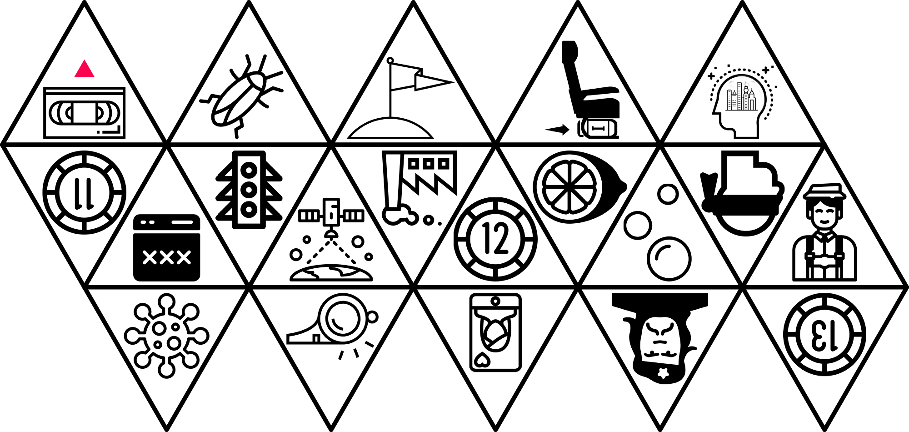
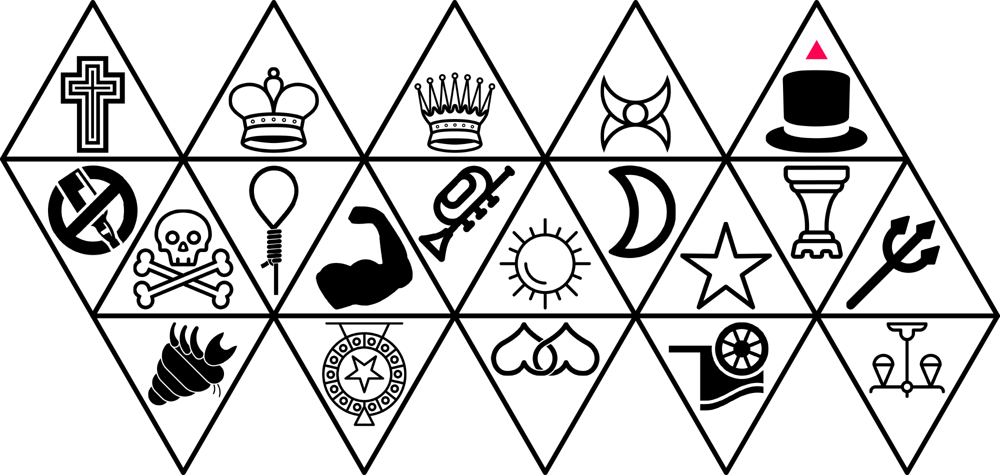
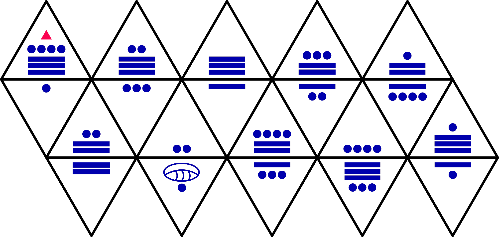
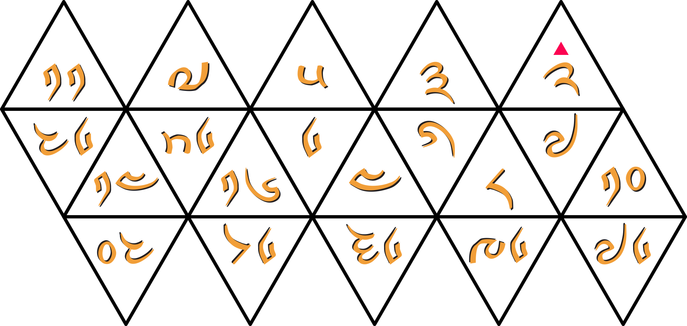

Your guide to Reference Point seems a little unusual face-to-face.
This puzzle utilizes the box your team was mailed with the pink sticker. The teammate(s) with this item should now open it.
This puzzle included four custom d20s with the following layout of sides:




For those without the physical item, the virtual version of this puzzle will unlock in {{ puzzle_info|until_available_for_minutes:180 }} minutes.
{% endif %}I met a fool sitting in a director's chair; he was passing the time by rolling dice. “Do you wish to take a journey?” he asked. “These dice have twenty faces, but it all boils down to a binary question.”
He rolled two dice. “After you say yes, head east and pass through long stretches of lies and make-believe. Your quest will lead you through eleven blocks of an insane city: you will meet nine blind men and then brawl with seven British sailors. Persist in the face of diminishing odds, but halt before things go haywire. When you enter the land of the feathered serpent, you will immerse yourself in an ocean of blue.”
He produced two more dice from his sleeve. “Then follow my path by traveling south. Be a walker, not a rider—but do not wait. Stride through the prime of your life: resist the temptations of ten succubi, take shelter in a castle with nine turrets, and get autographs from eight celebrities—stopping before you reach the end of the world. You will enter the land of the thunder dragon and reimagine your existence like a peeled orange.”
He stuffed all the dice in his mouth. “A grand tour has meaning only when you visit its waystations in the correct sequence,” he mumbled. “After you travel south and east, you will be prepared for anything, even an earthquake that reorders the terrain and reveals your true path as you walk in the same directions.”
What did this trek require?
14C30{% include "round_files/endgame/book.tmpl" with book="cts-degreesof" %}
6G5H
10B20
G92E
39HJ6
G92E
39HJ6
GI84
14BF9
GA8C
39HJ6
GBDI
6J1I
G92F
4FG30
0
47HE
6G5H
47HE
1GIFC